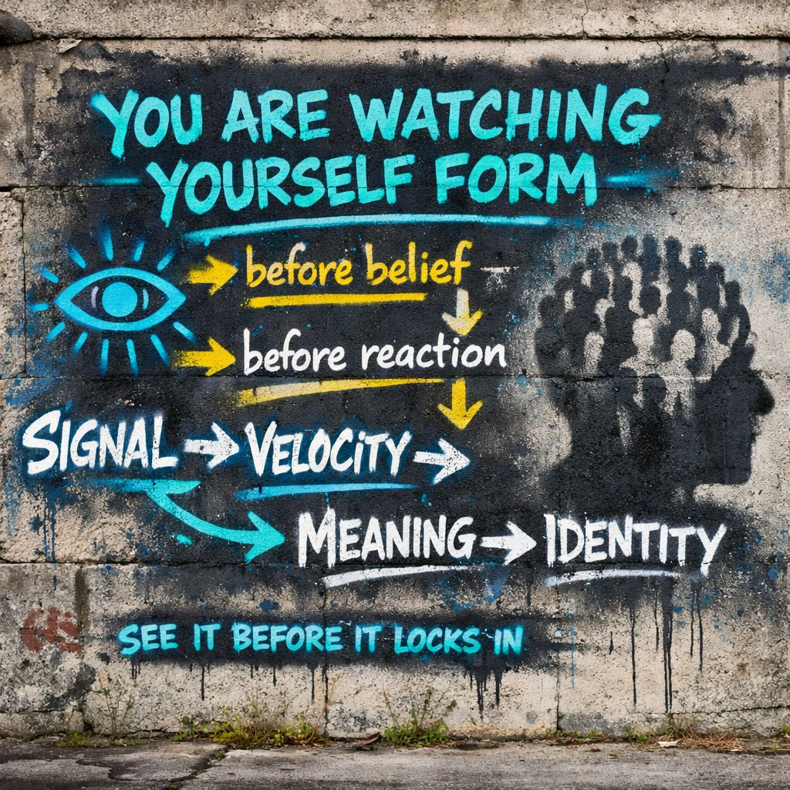

🧠 Symbolic Interactionism → Signal Awareness
📍 Foundation
George Herbert Mead established a core insight: the self is not pre-formed. It develops through interaction.
People do not respond to the world directly. They respond to meanings created through shared symbols.
⚙️ Core Process (Mead)
Identity forms through a sequence:
- 🎭 Role-taking — learning others’ perspectives
- 🌐 Generalized other — internalized social field
- 🧠 Self formation — organized response to expectations
The individual becomes a self by learning how they are seen.
📡 Translation (IPT Frame)
This process can be observed as:
- Signal = incoming social input
- Velocity = speed of emotional / cognitive uptake
- Meaning = interpretation layer
- Identity = stabilized pattern
🌐 Generalized Other (Field Model)
Mead’s “generalized other” becomes:
Not a person. Not a group. A simulation of expected reactions.
This includes:
- anticipated judgment
- learned norms
- predicted responses
The environment no longer needs to be present. It is carried internally.
⚖️ Structure of Self
Mead
“Me” = socialized self
“I” = spontaneous response
IPT
🧱 “Me” = stabilized identity pattern
⚡ “I” = live signal response, pre-stabilization
Identity is the negotiation between incoming signal and stored pattern.
🌪 Modern Conditions: Acceleration
Under current conditions:
- 📱 continuous signal exposure
- ⚡ increased velocity of interpretation
- 🌐 persistent generalized other, always-on field
Result:
- rapid identity formation
- premature meaning lock
- increased reactivity
⚠️ Failure Modes
When velocity exceeds processing:
- 🧩 meanings form too quickly
- 🎭 roles rigidify
- 🧠 identity becomes defensive
Observed as:
- outrage loops
- parasocial attachment
- identity panic
🔍 IPT Extension
Mead describes how identity forms. IPT introduces the ability to observe formation before stabilization occurs.
This operates at:
- 📡 pre-interpretation, signal recognition
- ⚡ velocity awareness
- 🧩 pre-label state
🔓 Function
IPT does not install beliefs. It modifies timing and awareness.
“This is who I am.”
“This is forming.”
👁️ Operational Shift
To observed identity formation
📡 Final Distillation
The self is constructed through interaction. This process is continuous. Awareness of the process introduces flexibility within it.
What is seen clearly:
- 🧩 does not have to finalize
- 🎭 does not have to be inhabited
- ⚙️ does not have to run automatically
🧱 IPT Position
Not a doctrine. Not a replacement identity.
A viewing position inside the formation process itself.